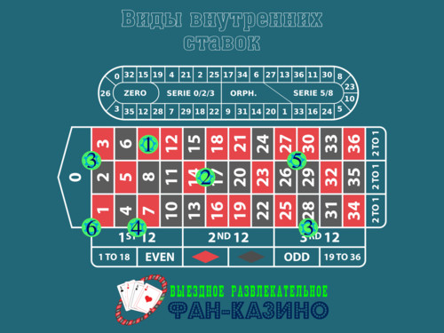
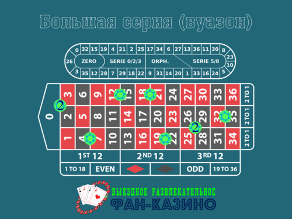
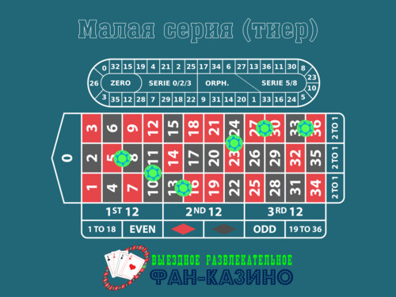
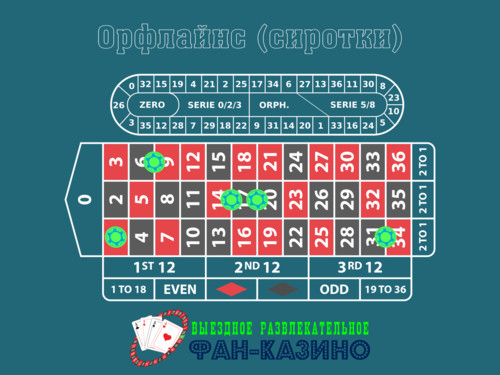
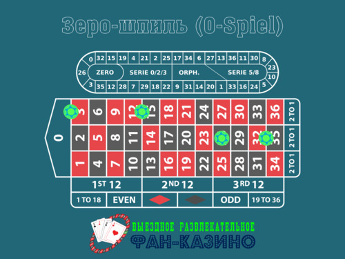

Правила игры в рулетку
Правила игры в рулетку довольно просты: у вас есть колесо с красными и черными ячейками с номерами от 1 до 36 и одна или две зеленых ячейки с нулем — в зависимости от того, играете вы в европейскую рулетку с одним нулем или американскую рулетку с двумя нулями. Кроме колеса, игровое поле есть и на столе, на нем расположены цифры в арифметической последовательности от 1 до 36 — здесь вы и будете делать свои ставки.
Игроки могут приступить к ставкам сразу же после падения шарика, как только дилер соберет с поля все проигрышные ставки и начнет делать первые выплаты. Последние ставки можно делать во время броска (спина) до слов дилера: «Спасибо! Ставок больше нет!» Номер ячейки, в который попадает шарик, — выигрышный номер.
Виды ставок на рулетке
В рулетке можно делать ставки как на один номер, так и на разные группы чисел. Существует множество комбинаций для ставок, каждая из которых дает разные шансы на выигрыш и разные выплаты. В общем, чем больше номеров вы поставите, тем больше у вас шансов выиграть и, следовательно, тем ниже выплаты, предполагаемые игрой. Кроме этого, все ставки делятся на три основные категории: внутренние, внешние и устные. Первые две категории относятся к простым ставкам, они предлагаются во всех играх в рулетку, и о них вы обязательно должны знать. Устные ставки для более продвинутых игроков и представлены только в некоторых вариантах рулетки. Теперь давайте начнем с основных ставок на рулетке.
Внутренние ставки в рулетке
Если вы обратите внимание на раскладку поля стола рулетки, вы заметите, что основная его часть состоит из чисел от 0 до 36, расположенных в арифметической последовательности, остальное же — это сектора для ставок на группы чисел: нечетные и четные номера, красные и черные, 1-18 / 19-36, колонки и дюжины. Ставки, которые вы делаете на сами номера, называются внутренними ставками, тогда как ставки, сделанные на группы чисел, называются внешними. Существует шесть видов внутренних ставок, как описано и показано на рисунке ниже:

- Straight Up (стрейт ап), или «ставка в номер». При этой ставке выигрывает только одно число. Чтобы ее сделать, нужно поместить фишку в центр квадрата.
- Split (сплит). Ставка на два числа, которые соседствуют на поле, производится путем размещения фишки на общей линии квадратов двух чисел.
- Street (стрит). Ставка на три последовательных номера, расположенных на одной линии или имеющих общий угол. Сделайте ставку, поставив фишку на внешний угол ряда или на угол, образуемый тремя числами.
- Six Line (сикс лайн). Ставка на шесть номеров. Чтобы сделать эту ставку, вы должны поместить фишку на общий внешний угол двух линий.
- Corner (конер), или каре. Ставка на четыре числа. Ее можно сделать, разместив фишку в общий угол четырех чисел.
- First Four (фест фо, в пер. с англ. «первые четыре»). Это обычный конер, который включает в себя числа от 0 до 3. Ставка на 0, 1, 2 и 3 с фишкой на углу, разделяющая поле с нулем и первую линию.
Как видите, внутренние комбинации ставок довольно логичны и легко запоминаются. Как мы уже упоминали, они дают вам разные шансы на победу и разные выплаты.
Внешние ставки в рулетке
Как мы уже писали, внешние ставки на рулетке — это те ставки, которые размещаются за пределами числового поля, то есть в секторах, и охватывают большие группы чисел. Существует пять распространенных типов внешних ставок:
- На красное или черное — ставка на цвет выигрышного номера.
- Нечетное или четное — ставка на то, будет ли выигрышный номер нечетным или четным.
- Ставка «Малые и большие номера»: малые номера от 1 до 18, большие номера от 19 до 36. Эта ставка на то, будет ли выигрышный номер ниже 18 или выше 19.
- Дюжины — ставка на одну из трех дюжин, которые находятся на игровом поле. Первая дюжина — это числа от 1 до 12, вторая дюжина — 13-24 и третья дюжина — числа от 25 до 36.
- Колонки — ставка, при которой одна из трех линий будет выигрышным номером.
Устные ставки
Устные ставки представляют собой специальные комбинации ставок, которые имеют исторически сложившиеся французские названия.
#1 Давайте начнем со ставки Voisins du Zéro, также известной как Neighbours of Zero («соседи нуля»). В России ставку знают как «Большая серия», или просто вуазон. Ставка закрывает ноль и 7 чисел с каждой стороны от нуля — от 22 до 25 на колесе. Таким образом «Большая серия» охватывает 15 номеров и состоит из 9 фишек:
- Стрит покрывает 0, 2, 3 — 2 фишки
- Пять сплитов: 4/7, 12/15, 18/21, 19/22, 32/35 — по одной фишке на каждый
- Один конер: 25/26/28/29 — 2 фишки

#2 Еще одна ставка, которая как и Voisins du Zéro тоже охватывает довольно много чисел (треть колеса), называется Le Tiers Du Cylindre. В России эту ставку называют «Малая серия», или попросту тиер. На колесе она расположена напротив серии вуазон и охватывает 12 номеров — от 27 до 33 на колесе. Отсюда и название: буквально переводится как «одна треть колеса». Все числа, входящие в эту ставку: 27, 13, 36, 11, 30, 8, 23,10, 5, 24, 16 и 33. Состоит из 6 сплитов: 5/8, 10/11, 13/16, 23/24, 27/30 и 33/36 (см. рисунок).

#3 Следующая популярная устная ставка называется Orphelins, переводится как «сиротки». Это в значительной степени ставка, которая покрывает то, что не покрыли вуазон и тиер вместе взятые. Орфлайнс закрывает 8 чисел: 1, 6, 9, 14, 17, 20, 31 и 34. Это ставка состоит из одного стрейт апа и 4-х сплитов: 1 — это стрейт ап, числа 6/9, 14/17, 17/20 и 31/34 — сплиты.

#4 Кроме этого есть еще ставка Jeu Zéro, или zero-spiel («зеро-шпиль»), дословно переводится как «нулевая игра». Эта ставка закрывает числа от 12 до 15: получается, что с одной стороны играет 4 числа, а с другой — 2 (в игре участвует 7 чисел). Ставка состоит из одного стрейт апа — номер 26 и трех сплитов: 0/3, 12/15 и 32/35 (как показано на рисунке).

#5 Очень распространена устная ставка Neighbours, «соседи». Это ставка на 5 номеров, которая охватывает определенное число и 2 соседних номера с каждой стороны и расставляется следующим образом: по одной фишке на стрейт ап каждого номера. Например, ставка «5 и соседи» охватывает номера 5, 24, 16, 10 и 23. Чтобы сделать эту ставку, вам понадобится специальный раздел ставок, который называется рейстрек. Действительно, очень полезная ставка, особенно когда вы играете в живую рулетку и обнаружили закономерность в действиях дилера, которая наводит вас на мысль, что шарик упадет в определенный участок колеса. Стоит отметить, что эта ставка для продвинутых игроков, которые ориентируются в последовательности чисел на колесе и знают, какие числа находятся рядом, какие — напротив.
#6 Другая специальная ставка называется Finale Plein («финал»). «Финал» позволит вам сделать ставку на то, что будет последней цифрой выигрышного номера. Например, если вы делаете ставку на «Финал—4», то это будет ставка на 4 номера — 4, 14, 24 и 34.
#7 Несмотря на то что в «финал» редко когда играют, существует ставка «соседи финалов». На «соседи финалов» принимается 20 фишек, по 5 на каждого соседа, всего 4. И играют соседи последних цифр выигрышного номера. Например, если мы заказываем «Финал—4», то играют соседи 4, 14, 24 и 34. Нюанс: если окончание больше чем 6, например 7, то на «Финал» принимается 3 фишки, а на «Соседей финалов» — 15.
Если вы когда-нибудь планируете играть в казино на реальные деньги, крайне важно знать, каковы ваши шансы на победу. Это особенно актуально для рулетки, где каждая ставка имеет определенную математическую вероятность выигрыша. Понимание шансов и вероятностей имеет первостепенное значение, так как от этого может зависеть ваша стратегия и тактика.
Коэффициент выигрыша и выплаты в рулетке